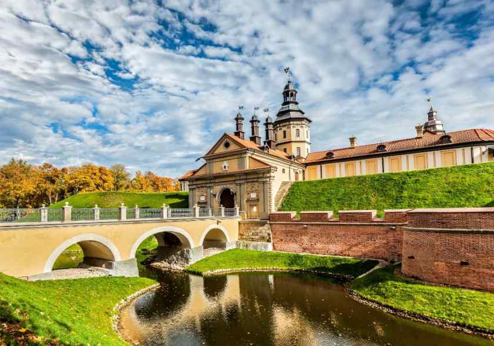

Замок был построен в начале XVI века в небольшом поселении Мир. За свою долгую историю замок сменил ни одного хозяина и повидал ни одно сражение. В его покоях жил род Ильиничей, устраивали балы великие Радзивиллы, опочивал атаман Святополк-Мирской.
Несвижский замок

Дворец был построен в XVI веке в белорусском городе Несвиже. К проекту строительства приложил руку итальянский архитектор Джованни Бернардони. Чтобы замок был надёжным и непреступным, на месте его возведения создали искусственный 20-метровый холм, а по
периметру вырыли глубокий ров.
Лидский замок
В 1323 году по указу князя Гедемина был возведён Лидский замок. Строили его из камня и кирпича, и представлял он собой классическую форму оборонительной крепости – неправильный прямоугольник с 2 башнями, расположенными на углах. Место для строительства
было выбрано удачно – песчаный холм был защищён водами болотистых рек Каменка и Лидея с одной стороны и 20-метровым рвом – с другой.
Коссовский замок
История этого замка Беларуси начинается не в Средневековье, а чуть позже - в 1838 году, когда князь Казимир Пусловский решил отстроить роскошную резиденцию. Название великого княжеского рода и породило название строению – его стали именовать дворец Пусловских.
Любчанский замок
Влиятельный вельможа Ян Кишка начал строительство замка в 1581 году на территории земляных валов, с трёх сторон которые защищалров, а с четвёртой – река Нёман. Изначально возводился он из дерева, лишь одна башня у въезда была выполнена из камня. Только
в конце XVI века были отстроены ещё 3 каменные башни и внутренние строения.
Ружанский дворец
Один из самых внушительных замков Беларуси, построенный в 1796 году великим литовским канцлером Львом Сапегой. Строился он соборонительной целью на обширной территории, имел форму креста и три четырёхгранные башни. В главном корпусе находилась парадная
зала и вестибюль, к которому вела двусторонняя лестница. Жилые комнаты, кабинет и библиотека располагались в боковых пристройках. В подвальных помещениях размещался архив, оружейный и продуктовый склады.
Гомельский дворец
Гомельский дворцово-парковый ансамбль считается главной достопримечательностью Гомеля. Он включает не только дворец, но и городской парк, Петропавловский собор, часовню-усыпальницу и другие значимые постройки. Дворец Румянцевых и Паскевичей был построен
в 1794 году по прообразу виллы Ротонды – итальянского памятника архитектуры. Изящный облик дворца был выполнен в духе классицизма.
Гродненский замок
Культовый памятник архитектуры, самый старейший представитель и единственный сохранившийся из королевских замков на территории Белоруссии. Построен он был из камня на месте Городенского гостинца, который сгорел в XII веке. В последующие годы в нём проживали
великие князья, среди которых числился Витовт, Стефан Баторий и Казимир Ягеллончик.
Кревский замок
Многие средневековые замки Беларуси были выполнены из камня и красного кирпича. Кревский замок же стал первой каменной крепостью Великого Княжества Литовского. Построен он был в XIV веке на месте слияния рек Кревлянка и Шляхтинка.
Новогрудский замок
Одна из самых мощных крепостей ВКЛ, Новогрудский замок стал ключевым сооружением в истории Беларуси. Останки башен и укреплений, сохранившиеся до наших времён, стерегут свои предания и легенды.